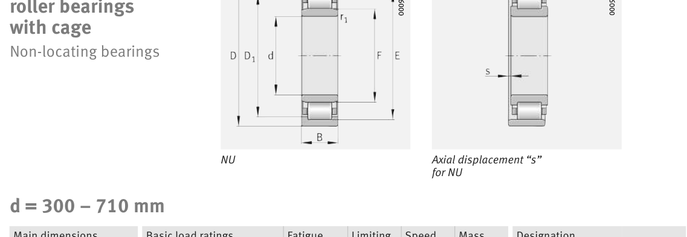

Original catalogue drawing - FAG Schaeffler HR 1, page 448

Scanned from the manufacturer catalogue page listing this part number. All part numbers printed on that table share the same drawing.
Scale cross-section
Blue = inner / outer ring, yellow = rolling element. Drawn to scale from this part's own
dimensions for selection reference only - not a manufacturing or assembly drawing.
Dimension table (mm / inch)
Symbol
Dimension
mm
inch
d
Bore diameter
380
14.9606
D
Outside diameter
680
26.7717
B
Inner-ring / bearing width
175
6.8898
r
Chamfer (min)
6
0.2362
E
Roller-set outside dia.
615
24.2126
F
Roller-set bore dia.
451
17.7559
Notes
Weights are given in kg. Load ratings are shown in both the original catalogue units and the converted value (1 N = 0.2248 lbf). Data is provided for selection reference only - confirm against the latest official catalogue before ordering.
Main dimensions
Bore d (mm)
380
Outside dia. D (mm)
680
Width B (mm)
175
Inner-ring shoulder dia. D1 (mm)
582.2
Dimension E (mm)
615
Dimension F (mm)
451
Dimension s (mm)
13.8
Load ratings & speeds
Basic dynamic load rating Cr (lbs)
910476
Basic static load rating Cor (lbs)
1506220
Basic dynamic load rating Cr (N)
4.05e+06
Basic static load rating C0r (N)
6.7e+06
Fatigue limit load Cur (N)
610000
Limiting speed nG (rpm)
1,420
Weight
Weight (kg)
288.0
Mounting dimensions (fillets / shoulders)
Housing fillet r max (mm)
6
Chamfer r1 min (mm)
6
Shaft shoulder da (mm)
406
Shaft shoulder db (mm)
456
Housing shoulder Da (mm)
654
Housing fillet ra max (mm)
5
Housing fillet ra1 max (mm)
5
Bearing life (ISO 281 basic rating life)
C / P
Equivalent load P (N)
L10 (106 rev)
L10h at 400 rpm
4
1,012,500
102
4,233
6
675,000
392
16,354
8
506,250
1,024
42,667
10
405,000
2,154
89,768
15
270,000
8,323
346,811
Basic rating life per ISO 281: L10 = (C/P)10/3 with C = 4,050,000 N. Hours = L10 x 106 / (60n). Life-modification factors for lubrication, contamination and temperature (aISO) are not included.
Source & traceability
Brand
FAG
Source catalogue
FAG / Schaeffler Rolling Bearings HR 1
Catalogue page
p.448 (dimensions)
Load ratings in newtons, fatigue limit load Cur, limiting speed nG and reference speed nB.
Send us the quantity you need and we will come back with price and
lead time, normally within 24 hours. Equivalent parts from other brands can be quoted at the same time.